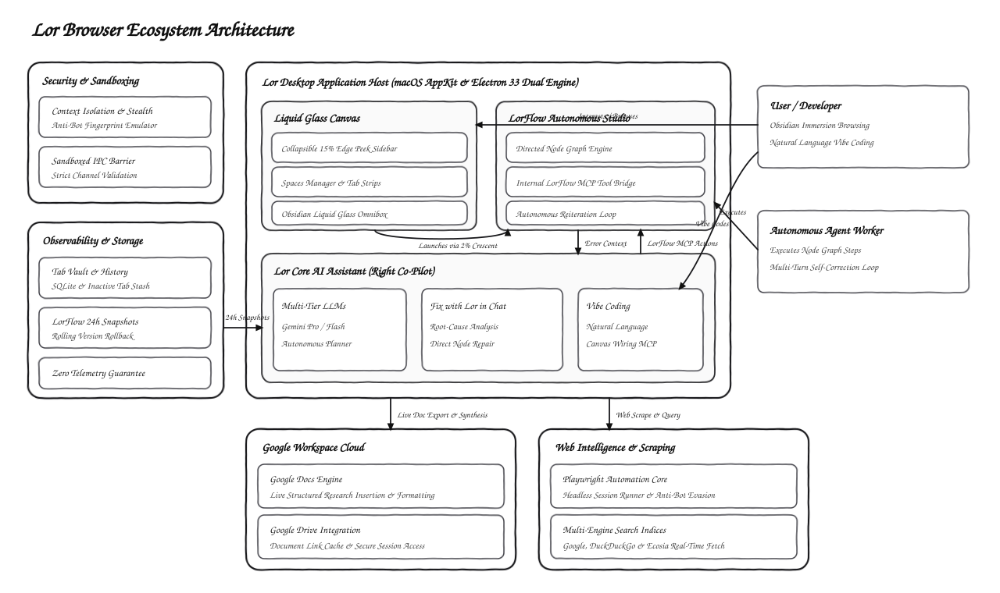
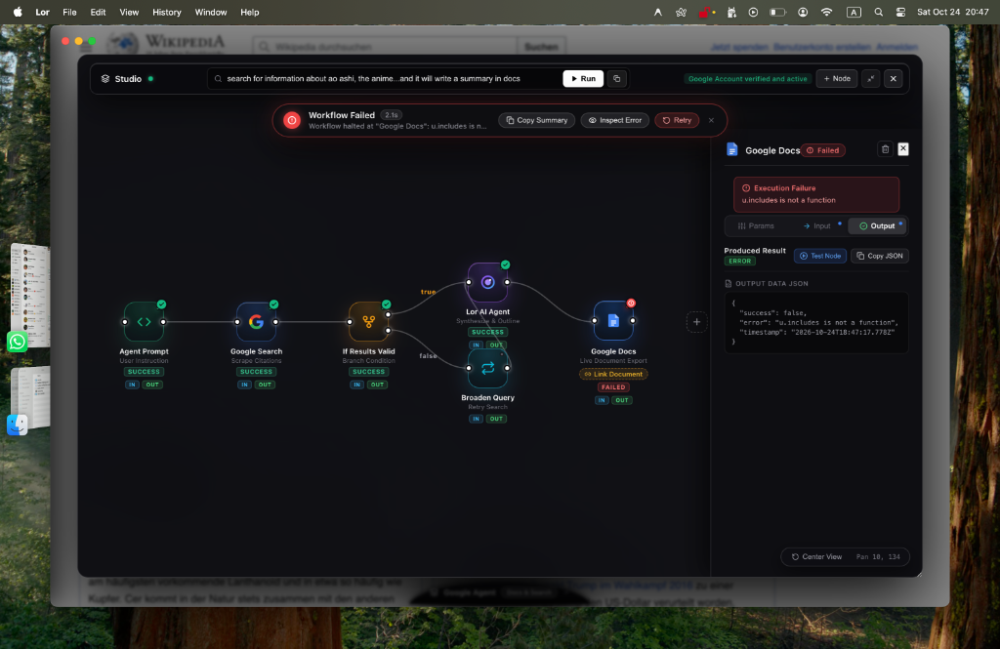
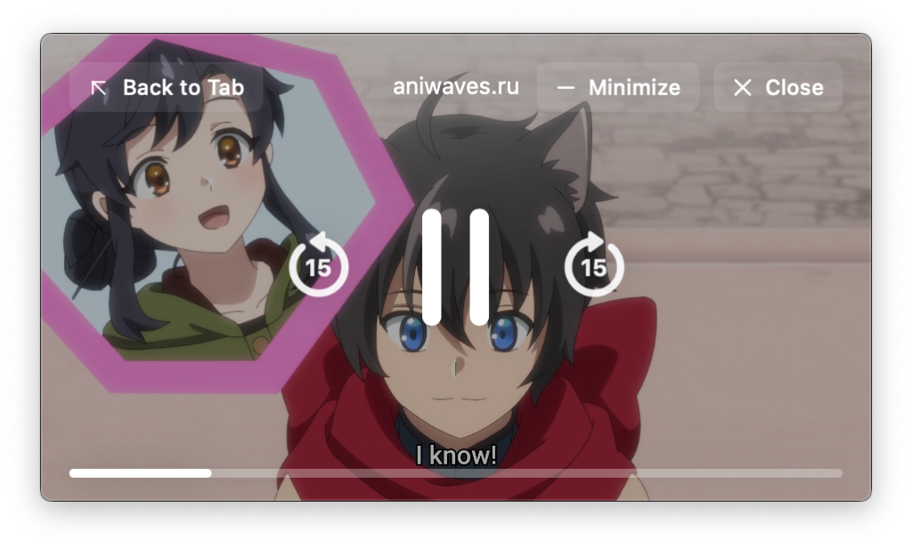

Modern commercial browsers are no longer user agents. They have turned into ad networks with rendering engines attached: cluttered with telemetry, saturated brand tabs, pop-up notifications, and tabs competing for cognitive attention. When you open a dozen tabs, you are fighting the browser just to think clearly.
Lor was started with a single question: What would a desktop browser look like if it were built from first principles for deep-work researchers, builders, and autonomous AI agents?
The Core Hypothesis: By pairing a zero-clutter, pure monochrome obsidian canvas with an embedded visual node-graph (LorFlow) and internal MCP vibe-coding, the browser evolves from a passive document viewer into an autonomous thought engine.
1. The Dual-Core Native Architecture
Building a high-performance browser on macOS presents an interesting dilemma: pure Electron offers rich node ecosystem capabilities and rapid cross-platform UI, while pure AppKit / WKWebView offers unmatched native responsiveness, zero-memory footprints, and fluid trackpad physics.
Rather than compromising, Lor implements a dual-codebase architecture:
- macOS Native Core (
Lor/): Built with Swift 5.9, AppKit, and a customWKWebViewPoolthat recycles web views, applies custom visual effect blurs (NSVisualEffectView), and handles native gesture swipes between contextual spaces. - Electron 33 Desktop Shell (
arc-browser/): Built with React 18, Vite, and TypeScript. Implements the complete multi-space manager, tab vaults, and the visual LorFlow studio canvas.
Security across this boundary is non-negotiable. Every renderer-to-main IPC channel is strictly declared and validated in electron/preload.ts. We enforce contextIsolation: true, nodeIntegration: false, and sandbox all webview partition sessions.
2. High-Level System Architecture Diagram
The following hand-drawn architectural diagram illustrates how the Lor application host orchestrates the visual canvas, the LorFlow studio engine, local observability, and external cloud services:

3. LorFlow: Visual Autonomous Workflows in the Browser
The crown jewel of Lor v0.2.0 is LorFlow: a visual node-graph automation studio built directly into the liquid glass canvas. Rather than relying on separate cloud automation platforms like Zapier or Make, LorFlow runs directly within the browser runtime.

A typical LorFlow pipeline connects modular nodes:
- Prompt Trigger Node: Captures search queries, research questions, or user briefs.
- Google Search / Scraper Node: Executes multi-engine searches (Google, DuckDuckGo, Ecosia) and extracts relevant web text.
- Gemini AI Synthesis Node: Synthesizes character profiles, technical analyses, or comparative summaries using multi-tier Gemini Pro/Flash models.
- Conditional Branching & Loops: Evaluates quality criteria and loops autonomously until a convergence threshold is met.
- Google Docs Live Export: Formats headings, structured bullet points, and citations directly into an authenticated Google Doc tab in real time.

4. Vibe-Coding with Internal MCP (Model Context Protocol)
One of the most radical capabilities in Lor is vibe coding your browser workflows. On the right side of the screen sits the Lor Core AI Assistant. We implemented an internal MCP service (lorflowMcp.ts) that exposes structured tools to the agent:
// Internal MCP Actions available to the AI Assistant
LorFlowMCP.getWorkflow();
LorFlowMCP.addNode(type, name, config);
LorFlowMCP.connectNodes(sourceId, targetId);
LorFlowMCP.revertVersion(snapshotId);
LorFlowMCP.fixNodeError(nodeId, errorContext);
LorFlowMCP.runWorkflow();When you chat with Lor and say "Add an AI synthesis node to summarize this research into 3 key takeaways and link it to my Google Doc", the assistant doesn't just reply with advice — it calls LorFlowMCP, modifies the live schema, and updates the canvas right before your eyes.
5. "Fix with Lor in Chat" & Self-Healing Workflows
Automations often fail due to malformed payloads, rate limits, or schema mismatches. In LorFlow, nodes don't silently die: a failed node surfaces a sleek "Fix with Lor in Chat" button.
Clicking this button instantly opens the right AI chat tab and transmits the full execution context (node ID, node type, incoming payload, error stack trace, and parameters). The agent diagnoses the root cause in plain English, runs an automated fix through LorFlowMCP.fixNodeError(), and offers one-click action chips to rerun the repaired workflow.
6. Continuous 24-Hour State Versioning & Rollback
Experimenting with automations should never risk losing past work. Every time LorFlow nodes are added, edited, connected, or vibe-coded, an immutable snapshot is recorded into local storage.
- 24-Hour Window: All snapshots created within the past 24 hours are retained.
- Relative Timestamps: The toolbar dropdown displays entries with relative markers (Just now, 5m ago, 2h ago) and node counts.
- One-Click Revert: Click
[Revert]to instantly restore any past workflow state.
7. The Bottom 2% Crescent Trigger & 15% Edge Peek
Immersion requires that powerful tools stay invisible until you need them:
- 15% Screen Edge Peek: Press
Cmd + Sto collapse the sidebar into borderless web immersion. Move your cursor within the left 15% display edge to peek your vertical tabs and spaces. - Bottom 2% Crescent Trigger: The LorFlow lunar crescent remains completely hidden off the bottom of the screen. Only when your mouse enters the bottom 2% does the solid crescent pop up. Dwelling on it charges the circumference beam and summons the workflow canvas.
Conclusion & What's Ahead
Lor is an ongoing work-in-progress, but v0.2.0 marks a major milestone: transitioning from a minimalist monochrome browser into an autonomous workspace where human researchers and AI agents collaborate seamlessly.
You can download the latest beta release directly from our GitHub repository and experience the future of autonomous web browsing today.